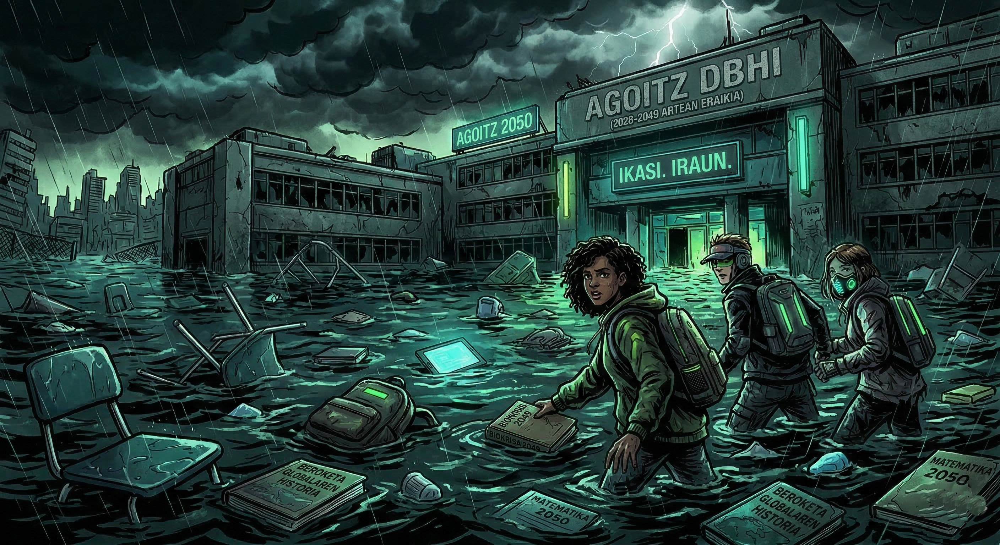

2050. urtea da...
Gure ikastetxea arriskuan dago. Klima larrialdiak dena aldatu du. Zuek zarete arduradunak egoera honi buelta emateko.

1. Ikertu
Gure ohiturak eta aztarna ekologikoa neurtu.
2. Asmatu
Arazoari irtenbide sortzaile eta bideragarria aurkitu.
3. Defendatu
Zuen 'Erreskate Plana' inbertitzaileen aurrean (ikaskideak) aurkeztu.
Taldeak eta DUA Formatuak
Nola aurkeztuko duzue proiektua?
Talde bakoitzak askatasuna du soluzioa nola aurkeztu erabakitzeko. Aukeratu zuen indarguneekin hobekien egokitzen den formatua:
Ikuskizun Digitala
Canva edo Genially erabiliz aurkezpen bisuala.
Uhin Jasangarriak
Podcast edo irratsaio formatuko grabazioa.
Ekintza Zuzena
Debatea edo antzerki txiki bat (Role-playing).
Maketa / Fisikoa
Material birziklatuekin egindako soluzio ukigarria.
1. Taldea
Olatz, Lur, Saioa
2. Taldea
Elena, Unax, Alicia
3. Taldea
Oihane, Manex, Noa
4. Taldea
Markel, Libe, Amets
5. Taldea
Ane, Yaiza, Iraitz
6. Taldea
Samira, Goizeder, Nonna
7. Taldea
Marko, Eneko, Nahikari
1. Saioa: Ikerketa eta Datuak
Gure Aztarna Ekologikoa
Zer lotura du nire gailu elektronikoen erabilerak planetaren berotzearekin? Ordenagailuetan kalkulagailua erabiliko dugu datu errealak lortzeko.
Kalkulagailua IrekiZeregina: Interdependentzia-diagrama
- Datu esanguratsuenak bildu.
- Paper handi batean loturak marraztu.
- Gutxienez 4 lotura sakon eraiki.
Hemen jarriko dugu Interdependentzia-diagramaren adibide/eskema bat
[assets/irudiak/diagrama-eredua.png]
2. Saioa: Soluzioak Asmatzen
"Zortzi Zoroak" (Crazy 8s)
Ideia zaparrada azkarra egingo dugu. Denok prest?
- Tolestu orri bat 8 laukitan.
- 8 minutu dituzue arazoa konpontzeko 8 ideia ero marrazteko edo idazteko.
- Taldean ideiak partekatu eta onena (edo konbinazio bat) aukeratu.
Formatuaren Sorkuntza
Aukeratu duzuen DUA formatuarekin lanean hasteko ordua da (Canva, Podcast-aren gidoia, Maketa...).
Hemen txertatuko dugu "Crazy 8s" txantiloia edo ikasleen krokis batzuen argazkiak
[assets/irudiak/crazy8-txantiloia.jpg]
3. eta 4. Saioak: Aurkezpenak
Inbertitzaileen Aurrean
Talde bakoitzak bere "Erreskate Plana" defendatuko du.
3. Saioa (Lehenengo txanda)
- 1. Taldea
- 2. Taldea
- 3. Taldea
- 4. Taldea
4. Saioa (Bigarren txanda)
- 5. Taldea
- 6. Taldea
- 7. Taldea
Ebaluazioa eta Errubrika
Koebaluazioa
Baloratu beste taldeen ideiak.
Autoebaluazioa
Nola sentitu naiz taldean?
Zer ebaluatuko dugu?
| Irizpidea | Nola lortu "Bikain" (4 Puntu) |
|---|---|
| 1. Ikerketa (Aztarna) | Diagraman ohituren eta ingurumenaren arteko 4 lotura sakon edo gehiago eraiki dituzue, zergatiak argi azalduz. |
| 2. Soluzioa | Asmatutako ideia oso berritzailea, bideragarria eta gure ikastetxeko testuingurura guztiz egokitua da. |
| 3. Jasangarritasuna | Proiektuak ikaskideak ekintzara modu eraginkorrean bultzatzen ditu. |
| 4. Taldelana (Emozioak) | Kideen arteko enpatia eta zaintza erabatekoak izan dira, desadostasunak elkarrizketa bidez positiboki ebatziz. |
| 5. Euskararen erabilera | Euskararen erabilera bikaina eta naturala da, bai ahoz, bai idatziz, lexiko aberatsarekin. |
| 6. Aurkezpena | Formatu digitala edo fisikoa sormen handiz erabili duzue, publikoarekin konektatuz eta galderei ongi erantzunez. |